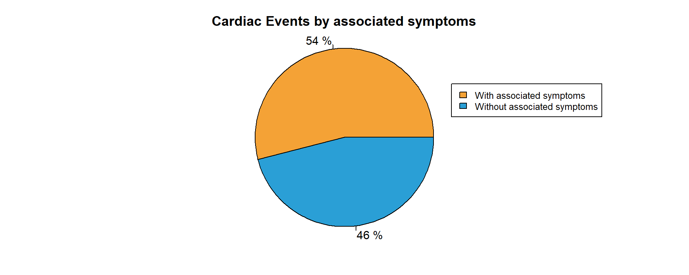
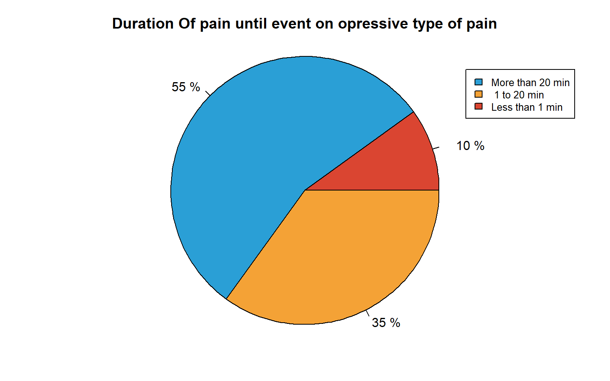

Informe Eventos Cardiacos
Introduccion
Para poder trabajar de una manera optima con el dataset que se nos fue propocionado, procedimos a buscar informacion y recopilar investigaciones de medicos con experiencia cardiologia. Con una base lista comenzamos a analizar los datos y buscar posibles combinaciones que aporten informacion nueva a lo aportado
Queries
Para poder definir nuestros Queries, procedimos a averiguar mas acerca de los sintomas que nos podian llegar a informar o predecir un posible evento cardiaco. A partir de esta ardua investigacion, procedimos a buscar relacionar esta informacion con los metadatas de nuestro dataset que se nos fue proporcionado. Juntando esto pudimos llegar a nuestras primeras queries
- Metadatas que tienen mas peso en los eventos
- Diabeticos con hipertension que son obesos y tienen eventos
- Antecedentes familiares, con la edad y los eventos
- Sme angioso con ubicacion de dolores y tuvieron evento
- Porcentaje de sintomas de largo plazo que llevaron a evento
- Densidad de eventos por edad en sintomas a largo plazo
Analisis de Datos
Genero
Este dato nos parecio muy importante ya que segun el National institutes of Health, en especial una investigacion del medico Neth Heart J, indica que estos eventos se darian mas en hombres que en mujeres
Genero total

Tuvieron un evento
Edad de quienes tuvieron algun evento cardiaco
Acerca de la edad de los pacientes que tuvieron algun evento cardiaco, sin tomar en cuenta sus demas problemas de salud, concluimos con que la mayoria de
Grafico
El grafico
Tabla
En esta tabla podemos notar claramente que la mayoria de los pacientes que sufren un evento pertenecen a la franja de edad de 32 a 80
| Etapa | Porcentaje |
|---|---|
| Adulto Joven | 0 |
| Adulto | 51 |
| Adulto Maduro | 49 |
Cantidad de personas obesas que tuvieron eventos cardiacos
Sintomas Asociados
Personas con evento

Interpretacion
Para esta parte nos encargamos de buscar relaciones interesantes entre los datos que analizamos anteriormente
Pacientes fumadores y obesos que tienen evento
Grafico
Tabla
Pacientes con obesidad y diabetes que tuvieron eventos
Graficos
Con eventos
Relacion entre obesos, diabeticos y antecedentes familiares
Grafico
Cantidad de eventos por duracion
Evento por duracion y ubicacion

Eventos por duracion

Dolor opresivo
